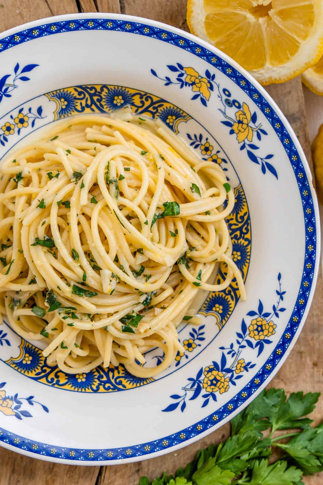

Home
Lemon Garlic Pasta (Pasta Al Limone)

This lemon garlic pasta is quick and easy, only needing 5 ingredients and 15 minutes to make. it is light, yet creamy, without any cream!
Ingredients
- 1 Lemon
- 180g pasta of choice
- 50g finely grated parmigiano reggiano (parmesan cheese)
- 4 garlic cloves diced
- 2 tablespoons olive oil
Garnish
- Handful of chopped fresh parsley
- Extra parmigiano, olive oil, and red pepper flakes (optional)
Method
- In a large pot, boil heavily salted water. Add the pasta and cook for a couple of minutes less than indicated on the package
- While the pasta is cooking, saute the garlic in olive oil in a large skillet. Cook on a low heat so that it infuses the oil and does not burn it
- Using a microplane or cheese grater, grate the zest of the lemon. Once done, squeeze the juice of the same lemon and remove any seeds
- When the pasta is ready, add straight to the pan with 1/2 cup of pasta water to allow it to finish cooking in the pan over medium heat
- Add the grated cheese and mix through continuously. If the pasta is too dry, add another ladle of pasta water and keep stirring for a couple of minutes to create a lovely creamy silky sauce
- Stir in the chopped parsley and it's ready to serve! Add a light drizzle of olive oil with more cheese and enjoy!
Lasagne
White Sauce
Arrabbiata